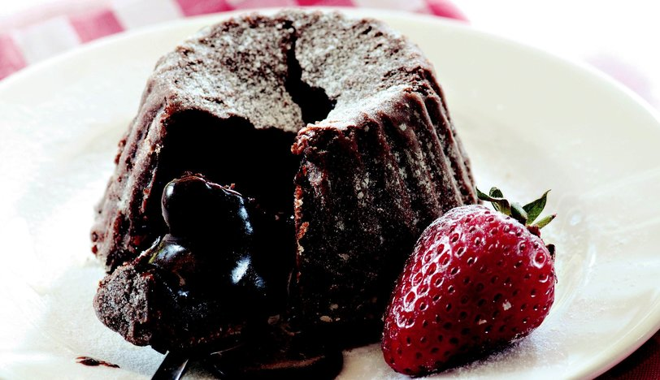

...Çikolatalı Sufle...

Tarifin Hikayesi
Yapılma süresi ile rekor kıran, çabucak hazırlayabileceğiniz, hızlı bir şekilde de tüketmeniz gereken sufle deneyen herkesi kendine hayran bırakacak. İçerisindeki akışkan çikolatası, yumuşacık keki ile kaşık kaşık yiyeceğiniz mükemmel bir tarif. 7’den 70’e herkesin seveceği sufleyi yapmak oldukçada kolay. En önemli noktası fırınınızın sıcaklığını ve süresini tutturabilmeniz.Suflenizi üzerine pudra şekeri serperek misafirlerinize ikram edebilirsiniz. Hazır almaktan yada dışarı da yemekten sizleri kurtaracak tarifimi defterinize mutlaka eklemelisiniz. Denemeyi unutmayın. Şimdiden afiyet olsun.
Çikolatalı Sufle Tarifi İçin Malzemeler
- 1,5 yemek kaşığı tereyağı (50 gr’dan biraz az)
- 80 gr bitter çikolata (kare olanlardan 1 paket)
- Yarım su bardağı un
- 3 yumurta
- 4 yemek kaşığı toz şeker
Çikolatalı Sufle Tarifi Nasıl Yapılır?
Çok pratik ve bir o kadar lezzetli bir tarif var şu an önünüzde :)
- Tereyağı ve çikolatalı küçük bir tencereye alıp birlikte eritin. Eridiğinde unu ekleyip beyazlık yok olana kadar karıştırın. (Hamur kıvamını alacak)
- Çırpma kabında yumurtalar ve şekeri köpürüp beyazlayana kadar çırpın (3-4 dk)
- Ardından çikolatalı hamur karışımını yumurtalı bu karışıma ekleyip orta hızda çırpmaya devam edin. Akışkan bir kıvam alacak.
- Sufleyi pişireceğiniz kapların içini yağlayın ve hafif toz şeker serpiştirin (kenarlarına da). Hazırladığınız karışımı yağladığınız kaplara paylaştırın ve 220 derecelik önceden ısıtılmış fırında 12-13 dk pişirin. 10. Dk itibari ile kontrol edebilirsiniz. Fırından fırına değişiklik gösterebilir :) Sıcakken servis edin.
Bu ölçülerle iki büyük sufle kabı ve ya ısıya dayanıklı 2 kase sufle çıkıyor.
AFİYET OLSUN :)
Kaynak için tıklayın!